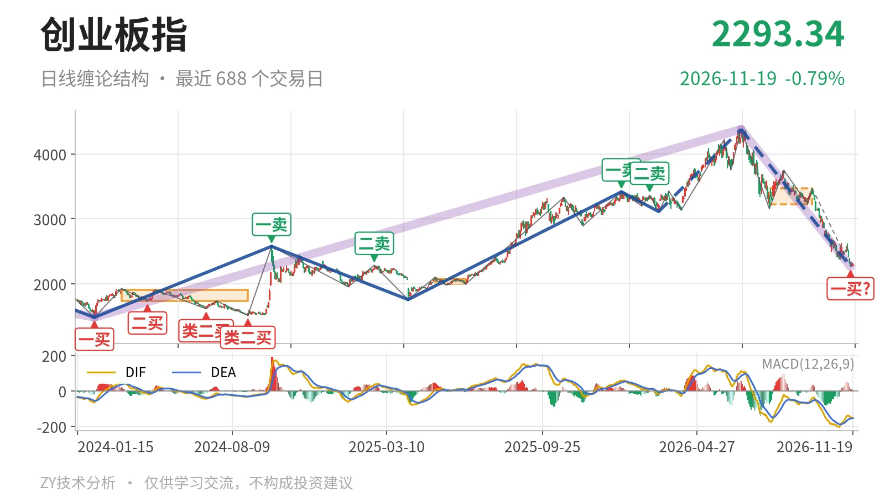
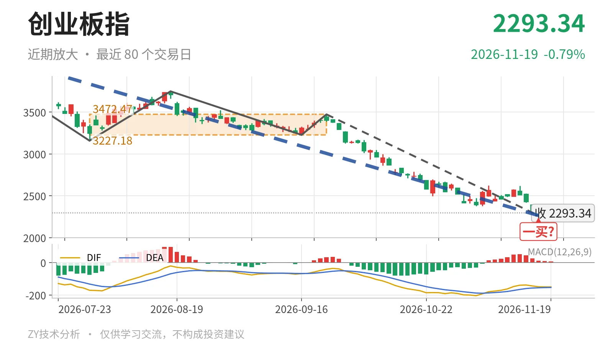

创业板指｜跌破3227点中枢，暂定一买2264点待验

最近日线中枢 3227.18—3472.47点，收盘位于中枢之下
一句话：仍在最近中枢下方，反抽未成笔，暂定一买随笔延续
🧭 走势结构：向下离开中枢，下跌仍占优
当前不是中枢震荡，而是向下离开最近日线中枢后的延续段。更大级别上，2024年2月5日至2026年6月25日上涨段从1482.99点走到4380.41点，涨约195.4%，目前仍未结束；6月25日以来的下跌段已回到2263.74点，跌约48.3%，也没有结束。日线线段里，3月9日至6月25日上涨线段与6月25日以来的下跌线段都未结束，说明长线上涨结构没被破坏，但当下日线下探占优。最近7月30日至9月22日日线中枢尚未完成，最新价已跌破其下沿，因此先看作向下离开中枢后的延续段。

📍 中枢与位置：跌破上移中枢下沿约28.9%
价格已跌破最近上移中枢的下沿约28.9%。最近日线笔中枢为7月30日至9月22日形成的3227.18—3472.47点，中轴3349.83点，较2025年5月14日至2025年6月23日中枢中轴2036.94点明显上移。最新收盘2293.34点已落到该中枢下方，同时贴近2015年9月2日至2018年4月2日线段中枢上沿2299.86点，略高于2022年4月27日至2023年8月4日线段中枢上沿2282.65点。原最近中枢下沿3227点一线转为反抽压力；目前没有新的日线笔中枢承接，暂不算中枢下移。
📉 买卖点：11月17日一买先按暂定处理
11月17日一买只能先按暂定处理。日线笔卖点里，1月13日一卖3416.84点和2月25日二卖3363.18点之后，价格在6月25日仍创出4380.41点新高，因此这两个卖点只对应更小级别。11月17日出现的一买落在2263.74点，所在9月22日至11月17日下跌笔还在延续，所以只能视为暂定的一买，会随该笔延续而变化。11月18日至19日最高2329.91点、最低2265.76点，既没有破2263.74点，也没有形成反向笔。

⚖️ 背驰：当前下跌笔新低仍新弱
当前下跌笔没有出现标准日线笔背驰。最关键的比较是仍在延续的9月22日至11月17日下跌笔与6月25日至7月30日下跌笔，前者绿柱面积由1837缩到1107，但DIF低点由-171.1降到-204.5，属于价格新低、指标也新低，不是“新低不新弱”。这意味着11月17日暂定一买尚无日线笔背驰支撑，其可靠性要落到更小级别结构。最新MACD柱仅6.4，DIF仍在零轴下方，反弹力度有限。
🔎 关键位置观察：先看3227点一线能否回抽
最新收盘贴着2299点一线，反抽仍未回最近中枢。若后续反抽不能回到3227—3472点中枢下沿3227点上方，结构上有构成三卖的条件；若重新站上3227点，这轮下跌更可能转为对最近中枢的扩展。下方先看2264点附近，若该位被跌破，暂定的一买就随笔下移。当前价格在中枢下方且无标准日线笔背驰，结构偏弱。
⚠️ 本文为基于公开行情数据的缠论技术结构记录，由程序自动计算并生成，仅供学习交流，不构成任何投资建议。市场有风险，投资需谨慎。